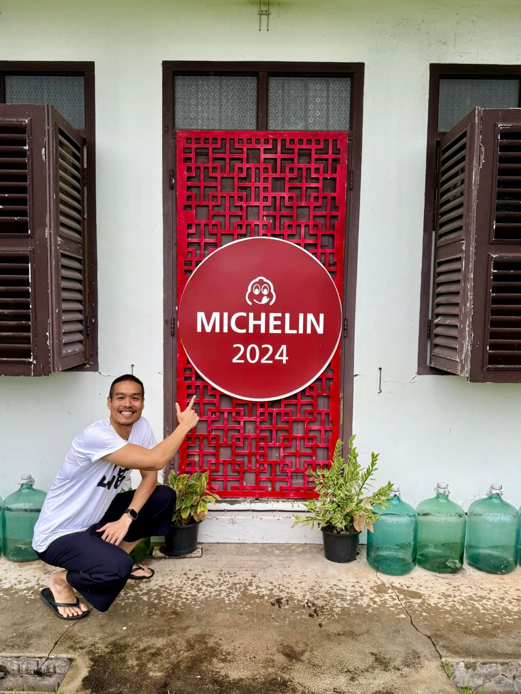

2024 · award · event
Toh Daeng earns its fifth straight MICHELIN nod, launches the ChefEGO project

Original text in Thai
😋 Michelin 2025 มาแล้ววว 🎉✨
ปีนี้มีโปรเจคใหม่ #ChefEGO - chef’s community-to-table เพียงแค่กิน ก็ได้ช่วยเหลือน้องๆ ที่ต้องการโอกาสในชุมชนไม้ขาวแล้ว ❤️
โปรเจคนี้เชฟปล่อยของ 🔥 ทำอาหารแบบคาดเดาไม่ได้ว่าคนที่มาจะได้ทานอะไร แต่การันตีด้วยรางวัล michelin 5 ปีซ้อน และเสิร์ฟโดยตั่วโก๊อ๊อดและทีมงานเช่นเดิม 😆 แต่สำคัญที่สุดในทุกๆมื้อ จะมีเงินส่วนหนึ่งกลับไปช่วยเหลือเด็กในชุมชน #อิ่มทั้งท้องอิ่มทั้งใจ 😇✨
เริ่มมื้อแรก 6/12/24 นี้ ยังไม่รู้จะออกมาท่าไหน ขอกำลังใจจากทุกๆคนเช่นเดิมนะคับ ❤️
ขอบคุณ Michelin ที่ไว้วางใจให้รางวัลร้านโต๊ะแดงบ้านอาจ้อต่อเนื่องกัน 5 ปีเต็มแล้ว ทีมงานทุกคนตั้งใจทำอาหารทุกจาน และบริการลูกค้าให้ดีที่สุดเท่าที่ชุมชนแห่งนี้จะทำได้ 💪🔥
ขอบคุณลูกค้าทุกๆ คนทั้งไทย ทั้งต่างชาติ ที่มาอุดหนุนซ้ำแล้วซ้ำอีก หากมีคำติคำชมขอให้บอกนะคับ ทุกๆ คำชมเป็นกำลังใจให้คนทำงานบริการใน ทุกๆ คำติ ทีมงานได้รู้ตัวและนำมาพัฒนาปรับปรุงให้ดีขึ้น ไม่เกิดซ้ำอีก 😇❤️
สุดท้าย เตรียมเปลี่ยนป้ายยย 🥰❤️
#รู้ว่าเสี่ยงแต่คงต้องขอลอง 💪
#tohdaeng 🧧
#longdaeng ✨
#บ้านอาจ้อ ❤️